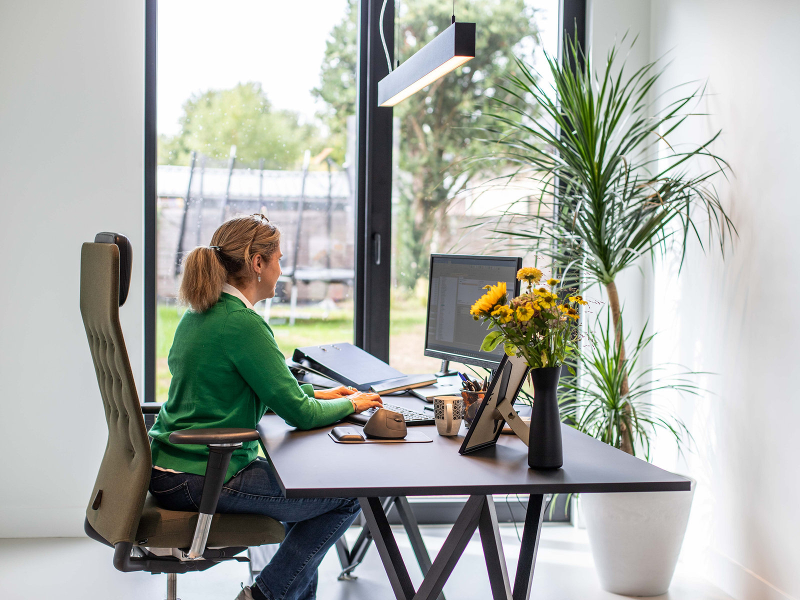
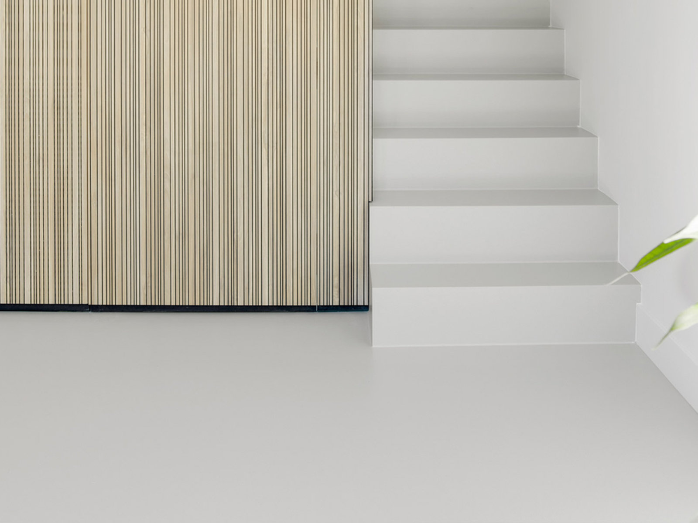

- Home
- Over ons
Een klein kantoor dat zijn dossiers zelf kent.
Jacobs Law werd in 2017 opgericht te Aartselaar. Wij zijn met twee advocaten — en dat is een bewuste keuze: uw dossier wordt behandeld door de advocaat met wie u het besprak.
Het kantoor
Een advocaat inschakelen is zelden een aangename stap. Er gaat meestal iets aan vooraf: een klant die niet betaalt, een onderneming die het niet haalt, een relatie die vastloopt. Wat u op zo'n moment nodig hebt, is iemand die de zaak snel doorgrondt en u in gewone taal vertelt waar u staat.
Dat is waar dit kantoor voor gemaakt is. Wij werken zonder tussenlagen: u spreekt met de advocaat die uw dossier behandelt, niet met een medewerker die het nog moet inlezen. Wij antwoorden op telefoon en e-mail, ook wanneer het antwoord is dat er nog niets nieuws is.
Het kantoor is bewust breed genoeg om een gezin door een echtscheiding te loodsen én scherp genoeg om een ondernemer door een nakend faillissement te begeleiden. Die twee werelden liggen dichter bij elkaar dan het lijkt: in beide gevallen gaat het over mensen die willen weten wat er nu gaat gebeuren.
Waar wij op letten
- Heldere afspraken vooraf. Over de aanpak, over de kosten, over wat realistisch is. Een cliënt die verrast wordt door een factuur, is een cliënt die niet goed werd ingelicht.
- Snelle communicatie. Termijnen in het recht zijn hard. Wij houden ze, en wij laten u tijdig weten wanneer er van u iets verwacht wordt.
- Een doelgerichte aanpak. Niet elk geschil verdient een procedure. Wij wegen af wat een uitspraak u werkelijk zou opleveren, en zeggen het wanneer dat weinig is.
- Doorverwijzen zonder omwegen. Het credo van het kantoor is dat, wanneer wij u niet kunnen helpen, u wordt doorverwezen naar een collega die dat wél kan. Vragen staat steeds vrij.
Kwaliteit, controleerbaar
Het kantoor behaalde in 2020 het label Peer Reviewed van de Orde van Advocaten — een kwaliteitstoets waarbij confraters de werking van het kantoor doorlichten. Beide advocaten zijn ingeschreven aan de balie van Antwerpen en volgen de deontologische regels en permanente vorming die daarbij horen.


Het team
Wie uw dossier behandelt.

Advocaat-vennoot · Balie Antwerpen
Liesbet Jacobs
Ondernemingsrecht (UGent), curator te Antwerpen, Mechelen en Turnhout, geaccrediteerd collaboratief advocaat en bestuurslid van vzw Pro Mandato.
Biografie
Advocaat · Balie Antwerpen
Michelle Damen
Burgerlijk en procesrecht (VUB, met onderscheiding). Verbintenissen-, aansprakelijkheids-, verkeers- en huurrecht en het personen- en familierecht.
BiografieEen zaak voorleggen
Eerst even aftoetsen of we u kunnen helpen?
Een vrijblijvend consult duurt ongeveer een uur. U legt uw situatie voor, u krijgt een eerlijke inschatting en u weet meteen wat een verdere aanpak zou kosten. Kunnen wij u niet helpen, dan verwijzen wij u door naar een collega die dat wel kan.
Vrijblijvend consult
Kennismaking en eerste mondeling advies. Bij ons is dat een vaste prijs, vooraf gekend — geen open einde.
- Een eerlijke inschatting van uw slaagkansen
- Duidelijkheid over de te verwachten kosten
- Doorverwijzing als een collega beter geplaatst is